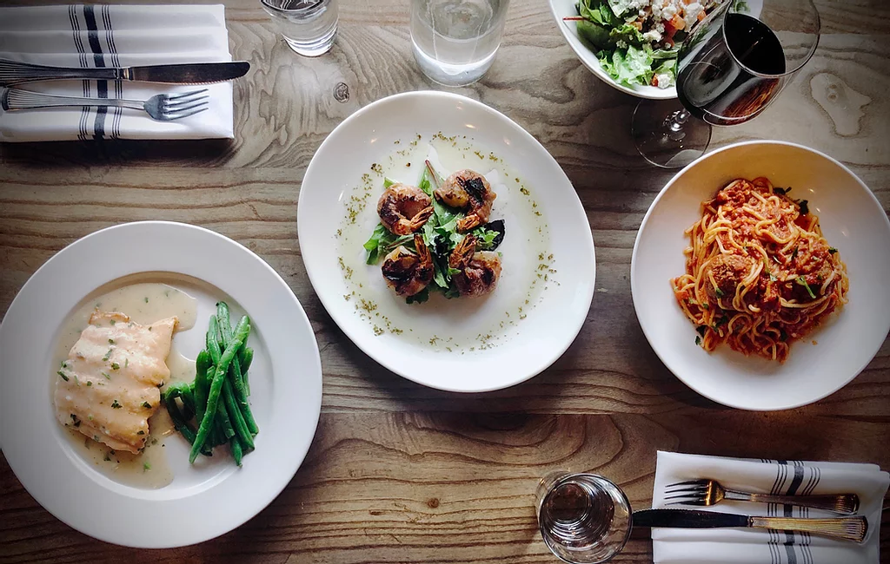

À propos de notre restaurant...
En poussant la porte Des Remparts, entrez dans un autentico ristorante italiano : là où les amateurs de pizzas se retrouvent pour manger entre amis, en famille ou simplement en amoureux, et ce à tout âge. les brigades sont orchestrées par des chefs cuisiniers et des pizzaiolos. Notre carte est composée essentiellement à base de produits frais. En moyenne sont livrés plus d’une tonne d’aubergines, 2 tonnes de champignons, 3 tonnes de tomates, 2 000 litres d’huile d’olives, 700 kg de jambon de Parme et autres produits frais chaque mois. 